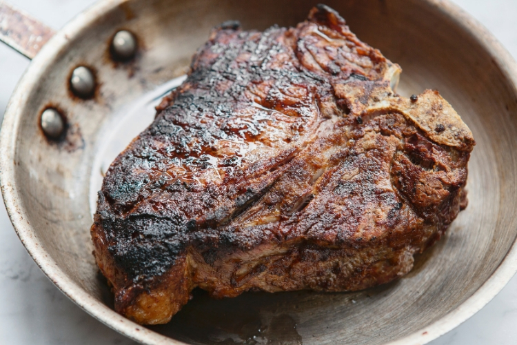
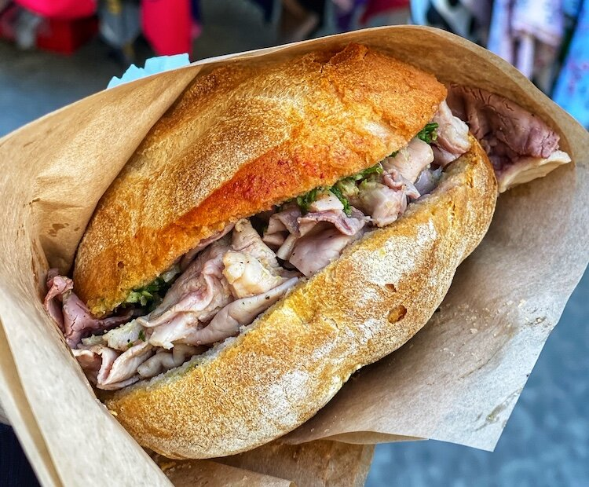
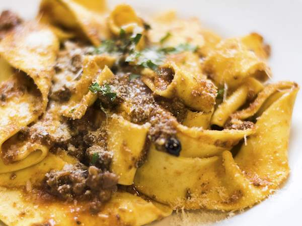
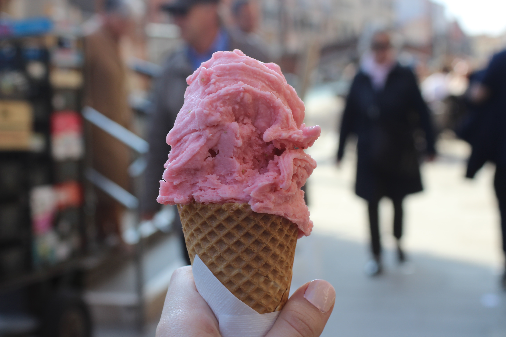

BISTECCA ALLA FIORENTINA
Recipe courtesy of Eataly
Yield: 4 servings
1 T-bone or porterhouse steak, at least 3 inches thick & 3-3½ pounds
1 bunch fresh rosemary
1 bunch fresh sage
2 tablespoons extra virgin olive oil
Kosher salt & freshly ground black pepper, to taste
Preheat a grill pan on medium-high heat. Pat the steak dry, and season both sides generously with salt and pepper.
Tie the rosemary and sage bunches together with butcher’s twine to form an herb brush. Use the herbs to brush the steak with olive oil.
Place the steak on the grill pan, and char it well: cook about 12 minutes on the first side, flip, and cook about 9 minutes on the second side. Like we said earlier, this steak is traditionally served rare.
When the steak is done, remove it from the grill pan and allow it to stand for 5 minutes so that the juices are retained when the meat is cut. Carve off the fillet and strip steaks, and slice before serving. Serve hot, and enjoy!
LAMPREDOTTO
You can’t say you’ve been to Florence if you don’t stop by one of its famous “chioschi” or street food stands where you can buy and taste Florence’s street food. Commonly referred to as lampredottai (literally, the makers of lampredotto), where you can taste the best of the city’s street culinary tradition, a sandwich filled with lampredotto.
Lampredotto is a local specialty for Florence. It is the fourth and final stomach of a cow, generally slow-cooked with tomato, onion, parsley, and celery until it has the texture of tender roast beef. Both are traditionally served on a crunchy bun, often first soaked in the broth and with spicy or green sauce.
PAPPARDELLE AL CINGHIALE
Recipe courtesy of Food Network
Yield: 2 servings
Macaroni:
4 eggs
14 ounces (400 grams) flour
Wild boar sauce:
2 onions, chopped
1 sprig rosemary
1 stalk celery, chopped
Olive oil
10 1/2 ounces (300 grams) tomatoes, chopped
14 ounces (400 grams) wild boar meat, minced
Freshly grated nutmeg
Mix together the flour and eggs until a dough is formed. Knead the dough until it springs back when pushed with your finger, about 10 minutes. Cover and let rest for 30 minutes. Roll out the pasta with a pasta machine, or a rolling pin until it is 1/16-inch thick. Cut into 3/4-inch wide ribbons. Cook until al dente in boiling, salted water, about 2 to 3 minutes.
Saute onions, rosemary, and celery in olive oil until soft and starting to color. Add tomatoes, wild boar, and grated nutmeg. Cook until the boar meat is cooked through and the mixture reduces to a sauce consistency, about 10 to 15 minutes.
Drain the pasta and add to the sauce. Toss until the pasta is well coated.
GELATO
Italy is known for its creamy gelato, with its rich texture and decadent flavors unparalleled elsewhere in the world. Florence is without a doubt one of the best places in Italy to experience this classic Italian treat.
Gelato is a frozen dessert of Italian origin. Artisanal gelato in Italy generally contains 6-10% butterfat, which is lower than other styles of frozen dessert. Gelato typically contains 70% less air and more flavoring than other kinds of frozen desserts, giving it a density and richness that distinguishes it from other ice creams.
According to visitflorence.com, absolute must-try gelato stops are: La Carraia, Carapina, Mordilatte, Perchè no?, Grom